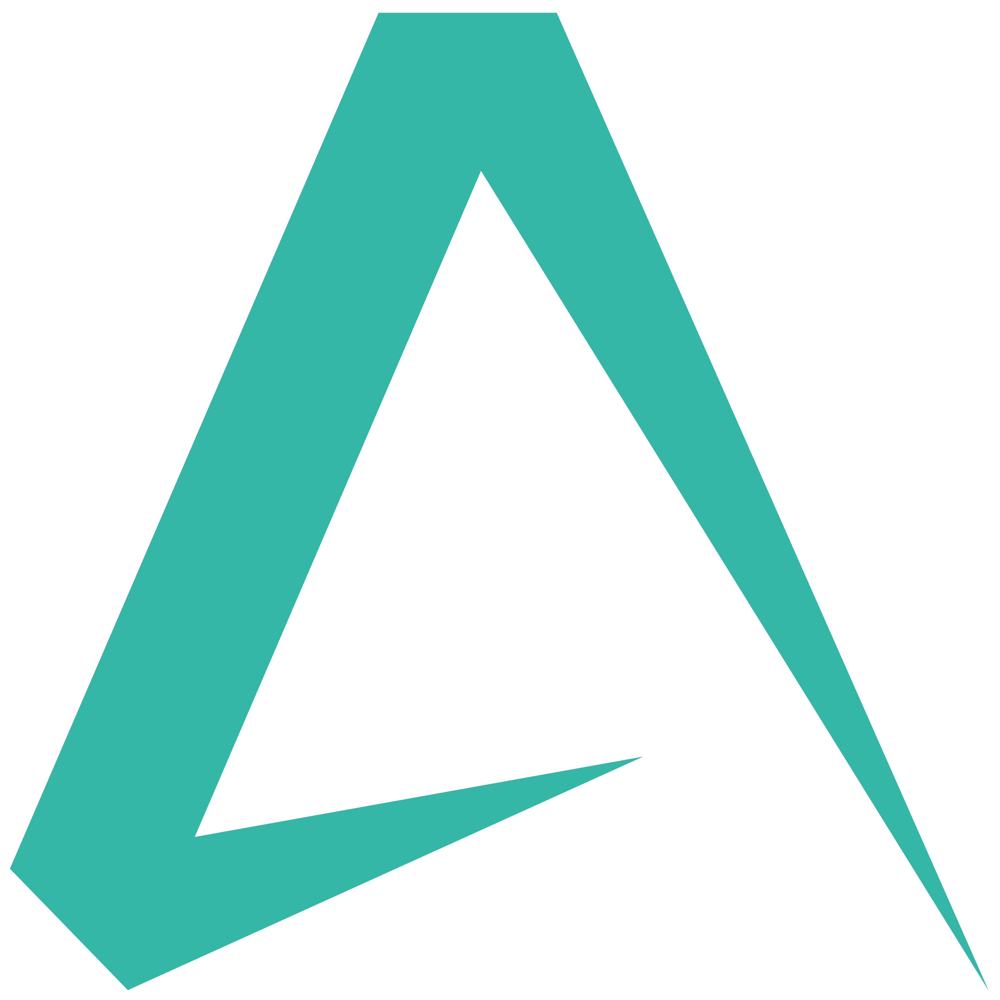
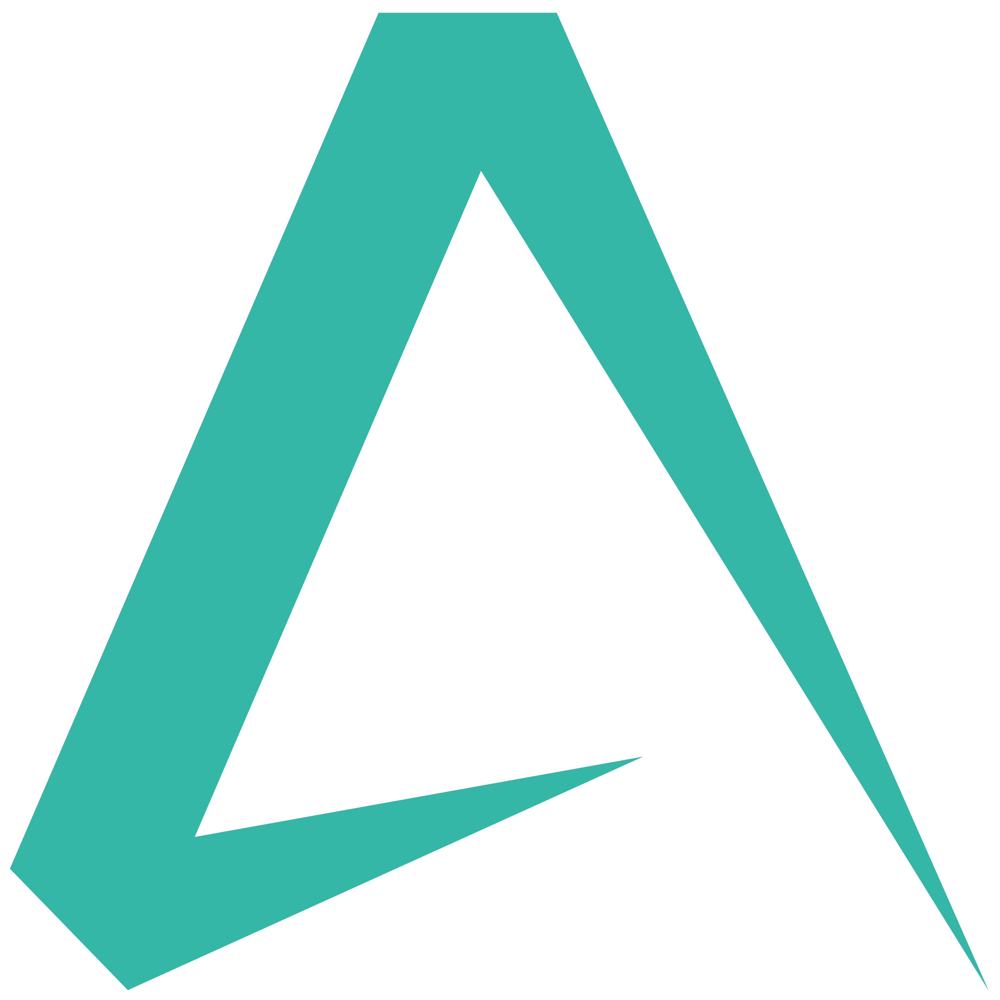

Resume
Aspiring to join a leading technology firm as a software developer, where I can leverage my experience, skills and knowledge in developing and maintaining software applications, deliver innovative solutions, grow professionally, and contribute to the success of the organization.
Download ResumeSummary
Arun Thankachan
Experienced software developer with 3 years of experience in developing and maintaining software applications using a variety of technologies. Possess a strong understanding of object-oriented programming and software development life cycle. Proven track record of delivering high-quality software solutions on time.
Education
Master of Computer Applications (MCA)
2017 - 2019
Saintgits College of Engineering, Kottayam
Completed NBA accredited MCA programme under the APJ Abdul Kalam Technological University, Kerala with CGPA 7.56
Bachelor of Computer Applications (BCA)
2014 - 2017
Parumala Mar Gregorious College, Valanjavattom
Completed BCA Programme under the Mahatma Gandhi University, Kerala with CGPA 7.02 [B Grade]
Certification
Python - Web Development Expert
2020 - 2021
Luminar Technolabs, Cochin
Completed National Council for Technology and Training (NACTET) certified Python-Django Full Stack Web Development Expert course with Grade A+
ChatGPT Master
Edapt Learning Platform
Completed ChatGPT Master: Master in Prompt Engineering, Certified by Edapt
Academic Projects
Eleves IAS (Internal Automation System)
It is a software that able to manage in a systematic way of student attendance and internal assessments of a particular institution. It is built using Visual Basic 6.0 and SQL Server.
This Internal Automation System facilitates to access the attendance information and internal assessment details of students. It can generate efficient weekly, consolidate report based on the attendance and calculate the internal assessment of each students. Consolidate report get all the student attendance details from starting date to the ending date status help for the eligibility criteria of the student to attend the examination.
Instamech (Instant Mechanic Services)
InstaMech is an online website developed using PHP, MYSQL, HTML, CSS, Bootstrap, JQuery. It mainly focuses on people who immediately need a mechanic, crane service or carriage service. It consists of list of these services, which are available in a particular locality according to our current location.
Janapalaka (Provides Social Service)
'Janapalaka' is a project that aims at brings life - changing care to orphaned and vulnerable peoples. It is developed using Android, PHP and MySQL. It is completely a social service application that helps peoples to help others from such a situation. In this application, a single photograph and a click may give a new life for such kind of peoples. It also includes the facility to report crimes to Police and can request protection from Police when needed.
IndiaEve
IndiaEve is an online event management system which discovers the best of the happenings in India and promotes the events. It helps the users to List, promote and book tickets online and manage registrations, Post and brand your events. It is developed using Asp.Net MVC and SQL Server. This site is live and the link is www.indiaeve.com
Professional Experience
Software Developer
2021 - Present
UST Global, Trivandrum, IN [Deputed by SoftwareOne]
- Developed and maintained software applications using React, Python, C#, .NET, and the Django framework.
- Developed and maintained a web-based application using React, C#, and Azure.
- Microsoft Teams Application Development.
- Maintaining Desktop/Email Notification WPF Application.
- Developed applications using Python, Django and OpenAI.
Full Stack Developer Intern - Python / Django
2020 - 2021
Luminar Technolab, Cochin, IN
- Designed and Developed web based applications using Python, Django.
Junior Software Developer
2019 [3 months]
Aabasoft Technologies, Kakkanad, IN
- Developed web application using C# and .NET MVC [www.indiaeve.com(live)].
Graphic Designer [Part- Time]
2014 - 2020
Johnson Press, TMavelikara, IN
- Designing and laying out print materials such as brochures, flyers, posters, billboards,magazines, wedding cards, visiting cards, book covers, Calendar, momentos etc.
- Creating and preparing high-quality, print-ready artwork, including pre-press preparation, color correction, and resolution checks.
- Collaborating with printers and other professionals in the print production process to ensure accurate and efficient output.
- Using InDesign to create multi-page documents, including books, annual reports, and catalogs.
- Utilizing Illustrator to create vector graphics and illustrations, such as logos, icons, and diagrams, for use in print and digital media.
- Working with Photoshop to retouch and manipulate images, such as product shots, for use in print materials.
- Preparing final print files, including checking for quality, proofreading, and finalizing all necessary elements for press.
- Maintaining a strong understanding of press-related technologies and software, including digital presses, variable data printing, and imposition software.
Achievements
- Won 1st Prize for Short Film Competition and Best Gang.
- Coordinates IT Fest.
Personal Features
- Dedicated
- Hardworking
- Quick Learner
- Positive
- Adaptable
- Decision Making
Hobbies
- Listening Music
- Designing
- Travelling
- Internet Surfing
- Watching Movies, Interviews